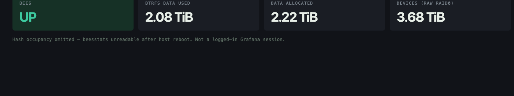
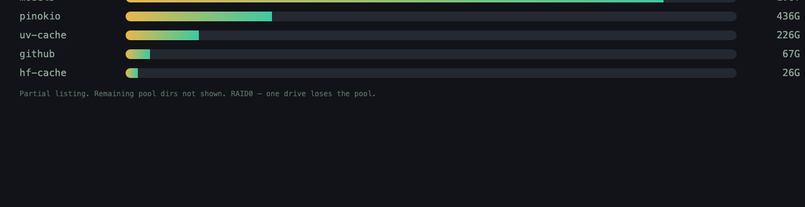

sample telemetry
A Grafana import and a Prometheus textfile exporter. Screenshots use generic bucket names and live sizes from 2026-08-15. No LAN IPs, no home paths.
Live du + btrfs fi df from a two-NVMe RAID0 pool on 2026-08-15. bees was running. The hash-table file on the array was unreadable after a host reboot, so occupancy is omitted rather than invented. Grafana/Prometheus themselves were down that evening — these panels are rebuilt from the exporter metrics, not a logged-in admin UI.


deploy/observability/ai_data_stats_exporter.sh every 15 minutes on the NAS host.--collector.textfile.directory on that output dir.fast-models-bees-dedupe).Do not treat content-hash “reclaimable GB” as bees savings. That series is optional and only appears if you pass AUDIT_JSON.
Full notes: docs/observability/README.md